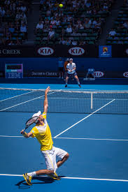

Regresar
Tenis
El tenis, también llamado tenis de campo,2 es un deporte que se disputa entre dos jugadores (individuales) o entre dos parejas (dobles).
El objetivo principal del juego es lanzar una pelota golpeándola con la raqueta de modo que rebote en el otro lado pasando la red dentro de los límites permitidos del campo del rival, procurando que este no pueda devolverla para conseguir un segundo rebote en el suelo y darle un punto.3
Etimologia
La palabra española «tenis» proviene del inglés «tennis», que a su vez tiene su origen en el francés «tenez».4Cuando el jugador de tenis (llamado «tenista») ponía la pelota en juego, exclamaba «¡tenuz!» («¡ahí va!», en francés).5
Reglas
El jugador solo puede golpear la pelota una vez por turno. Pero si gana un punto puede volver a golpear si está en su turno de saque.
El juego lleva una puntuación inusual: el primer punto se contabilizará como 15 puntos, el segundo como 30 puntos y el tercero como 40 puntos.
El partido se gana con 2 sets o con 3 sets dependiendo si se juega al mejor de 3 o al mejor de 5.
La pelota solo puede ser rebotada una vez antes de ser impactada por el jugador.
Ningún jugador podrá tocar la red; esto se considera punto perdido para el mismo.
Los jugadores van cambiando de lado de pista a lo largo del partido, en los juegos determinados, al final del primero, tercero, quinto juego y a veces hay sexto juego, esto se debe a la puntuación del partido.
